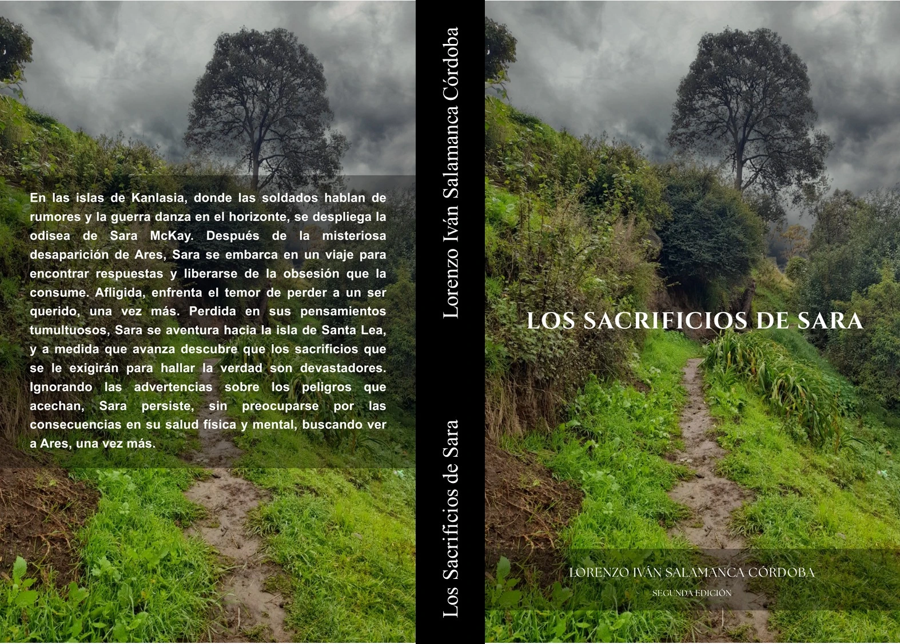
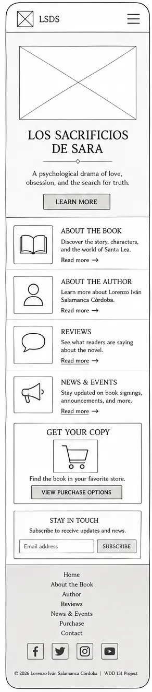
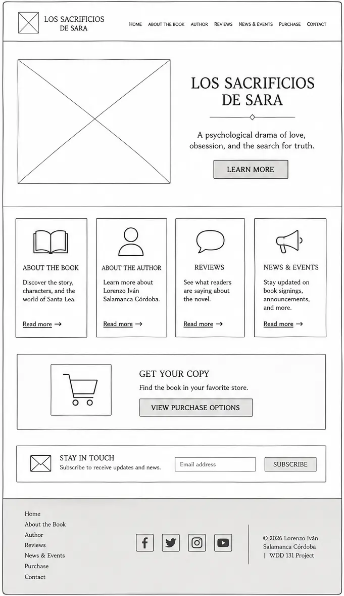

Site Name
Name: Los Sacrificios de Sara / The Sacrifices of Sara
Reason: I chose this kind of website because I’m interested in the digital promotion of literature. This topic will allow me to develop an engaging website that combines literature, marketing, user interaction, and more, making it a meaningful project for this course. It serves as the direct brand identifier for my psychological drama novel.
Site Purpose
The site provides a dedicated promotional hub for the book. It will include information about the book, a summary of the story, details about the author, book reviews, purchase links, contact information, announcements, updates, and promotional images.
Plot Summary
Amidst the western islands of the country of Drakemohr, a land shadowed by rumors of war, Sara begins a desperate odyssey after the mysterious disappearance of Ares, a man she deeply loved, and his sister, Estela. Sara sets her course toward the island of Santa Lea to find Ares, and to break the chains of an obsession that consumes her. Grief-stricken, she faces the fear of losing a loved one once again. Blinded by the need for closure, Sara ventures toward the island of Santa Lea, and as she moves forward, she discovers that the sacrifices demanded to uncover the truth might be devastating. Ignoring warnings about the dangers that lurk ahead, Sara persists, unconcerned about the consequences for her physical and mental health, fueled by an aching hope of seeing Ares once more. “The Sacrifices of Sara Part I” is a novel that narrates Sara’s personal journey, where every step hides a new peril.
Scenarios
Here we have some of the questions that our target audience (readers and fans of thriller, psychological fiction) might be asking when they visit the site:
- Scenario 1: Where can I purchase a physical or digital copy of "Los Sacrificios de Sara"?
- Scenario 2: When is the author's next book presentation or signing event?
- Scenario 3: What is the underlying lore of Santa Lea island, and are there more books planned in this universe?
Book cover
The following is the cover of the softcover version of the book.
Softcover

Color Schema
The color palette is directly inspired by the gloomy, atmospheric tones of the book cover, reflecting the psychological themes of the novel.
Primary: Dark Forest
#3C5A40
Secondary: Overcast
#6B705C
Background: Parchment
#F4F1DE
Text: Charcoal
#1A1A1A
- Primary (#3C5A40): Used for headers (h1, h2, h3), navigation backgrounds, and primary buttons to evoke the path on the cover.
- Secondary (#6B705C): Used for accents, borders, and footer backgrounds.
- Background (#F4F1DE): A soft, off-white background used for the main page body to provide a comfortable reading experience similar to book pages.
- Text (#1A1A1A): Used for paragraph text and body copy to ensure high contrast and accessibility.
Typography
The typography pairs a classic, literary serif font with a clean, modern sans-serif font to balance the feel of a novel with web accessibility.
- Headings: Merriweather. This serif font will be applied to the site title, navigation links, and all headers (h1, h2, h3). It gives the site a formal, published-book aesthetic.
- Body Text: Open Sans. This sans-serif font will be applied to all paragraphs, lists, and general reading content. It is highly legible on both desktop and mobile screens.
Wireframes
Below are the structural layouts/wireframes for the mobile and desktop views of the home page.
Mobile View

Desktop View
